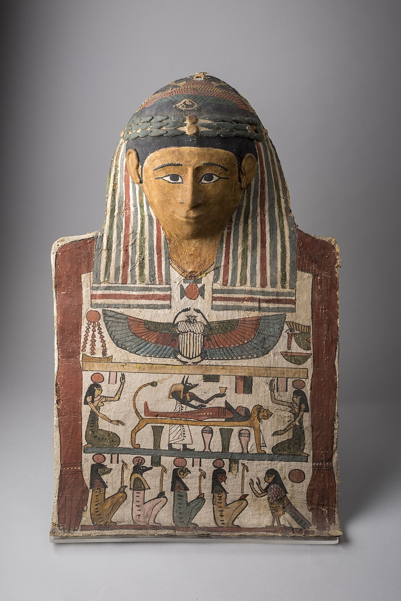

Семьдесят дней
Египетская мумификация — ритуал, а не санитария: из трупа делали сах — «священные останки», телесный дом для ка и ба, без которого бессмертие было невозможно. Обряд длился семьдесят дней, и срок этот связывали с циклом Сопдет (Сириуса): её гелиакальный восход открывал разлив Нила и «возрождение» мира — тело готовили к тому же новому циклу. Первыми мумифицировали царей; позже — любой, кто мог заплатить.
Палатка бальзамировщика
Работали не в доме, а в «палатке очищения» у воды: туда выносили тело и там его готовили. Жрецы-бальзамировщики действовали в масках шакалов — в обряде каждый из них был Анубис, владыкой некрополя. Каждый шаг сопровождали заклинаниями: успокаивали органы, «разговаривали» с телом, защищались от гнева покойника.
Через ноздри и «порочную руку»
Мозг вытаскивали из черепа длинными металлическими крюками, проведёнными через ноздри, — его не считали частью личности. Левый бок, его называли «порочной рукой», вскрывали бронзовым ножом: оттуда извлекали лёгкие, желудок, кишки и печень — четыре органа, ушедшие в канопы. Сердце оставляли на месте: в нём, по вере, жили разум и совесть, и именно ему отвечать на суде.
Натрон, смолы, бинты
Полости заполняли благовонными смолами, а само тело на сорок дней укладывали в ящик с натроном — природной солью, вытягивающей из плоти влагу. Затем его промазывали кедровым маслом, миррой и можжевельником и обматывали льняными полосами: до нескольких сотен метров ткани. Обвязка была молитвой: каждый слой «переодевал» умершего в новую жизнь.
Амулеты и «отверзание уст»
Между слоями бинтов жрецы клали амулеты: уджат на шею — для защиты и зрения, джед на спину — для стойкости, а на сердце — скарабея-сердечник. Его надпись — заклинание из главы 30Б Книги мёртвых: «не свидетельствуй против господина твоего перед владыкой всего сущего». Финал — у самого гроба: «отверзание уст», после которого мумия вновь обретала голос, дыхание и руки.
Слово «мумия» египтяне не знали: оно арабское (mūmia — смолистое вещество из тел, высохших в песке) и пришло к нам на много веков позже.